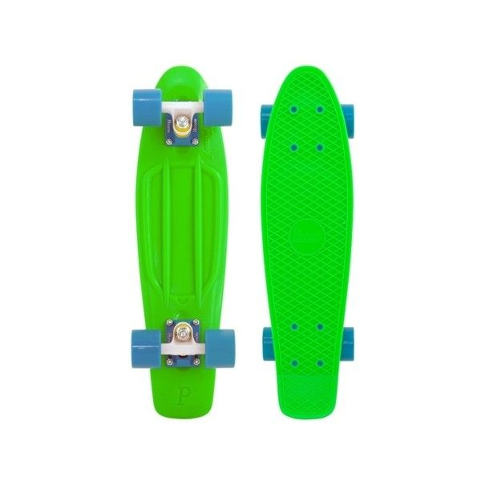

About Me

I love pennyboarding. It's such a fun way to travel. Plus you have to love
the portability of penny boards!
Below are my 2 favorite coding languages and why
-
JavaScript
- Great for web development
- Best language for dealing with JSON data
- Best package manager (NPM)
-
Python
- The cleanest language around, basically pseudocode
- Incredible support (my go-to for quick scripts)